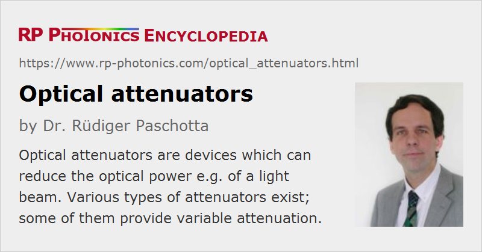

Optical Attenuators
Definition: devices which can reduce the optical power e.g. of a light beam
More specific term: variable optical attenuators
Opposite term: optical amplifiers
German: optische Abschwächer
How to cite the article; suggest additional literature
Author: Dr. Rüdiger Paschotta
Optical attenuators are devices which can be used to attenuate a light beam, i.e., to reduce its optical power. The amount of attenuation is often specified in terms of an optical density or in decibels, sometimes in percent of transmitted or blocked optical power.
Typical Requirements
- In some cases, a fixed degree of attenuation (e.g., 10 decibels) is sufficient, whereas in other cases one needs a variable optical attenuator (VOA), where the degree of attenuation can be adjusted, for example manually using some knob. An intermediate solution is to have a stepwise variable attenuation. In some cases, the adjustment of the attenuation can be controlled with an electronic signal. If this adjustment can be made quite fast, the device is actually an optical modulator. (Of course, any optical intensity modulator could be regarded as a variable attenuator.)
- It is often essential that the power can be attenuated without affecting the transverse beam profile. This is the case, for example, when a high-power laser beam needs to be characterized with a beam profiler which can handle only a limited amount of optical power. Obviously, it would be a problem if the beam profile would be distorted by the attenuator.
- Another aspect is the wavelength dependence. Often, one needs an approximately constant amount of attenuation in a certain wavelength range – for example, for all visible light. There are so-called neutral density filters which are made for such purposes.
- For some applications, it is vital that the obtained optical losses are not dependent on the polarization, or more precisely, that the polarization-dependent loss is very low. In other cases, for example when working with linearly polarized laser beams, that dependence may not be relevant.
- Particularly when working with high-power laser beams, the power handling capability of an attenuator may be another important aspect. It may be relevant not only to safely avoid damage of the attenuator, but also detrimental effects on the attenuated beam, such as beam distortions, or thermally induced changes of the degree of attenuation.
- Many optical attenuators are applicable to free-space beams, whereas others are of fiber-optic type or work for waveguides of other kinds.
Different Types of Optical Attenuators
Because the requirements can be very different for different applications, as shown above, a wide range of different kinds of optical attenuators is used in practice, which can exploit different physical mechanisms. The most important types are explained in the following.
Absorbing Filters
Optical absorption is one of the possibilities for realizing optical attenuation. One can obtain it, for example, in doped glasses, where the type and concentration of the dopant can be used to control the amount of absorption in a certain wavelength range. Typically, one uses such kind of absorbing filters in the form of plates. Several of such plates can be used in series in order to realize a higher degree of attenuation. By removing or exchanging some of the filters, one can realize a stepwise variable attenuation.
Continuously variable attenuation can be realized with a filter wheel (optical attenuator wheel), where the amount of absorption varies along a circle around the axis of rotation. There are also variable attenuators which are translated linearly by some suitable mechanics. In any case, the attenuation may be somewhat variable within the area of a light beam. That effect is avoided in devices where the attenuation varies in steps.
In order to avoid interference effects and problems with back reflections, one often slightly tilts such plates against the incoming beam.
When working with intense laser pulses, the absorption of a filter may be saturated (→ saturable absorbers) for some time during and after the pulse. This effect has to be taken into account; in some cases, it makes absorbing filters unusable.
Using absorbing filters can be a convenient and low-cost approach, requiring little space and introducing essentially no polarization dependence. However, as the removed optical power is converted into heat, thermal effects will occur at high power levels. These can easily lead to distortions of the beam profile or even to damage of the attenuator.
Neutral density filters can also be made as absorbing filters by using an appropriate combination of dopants to cover a wide wavelength range.
Attenuators Based on Reflection
Any uncoated surface of a transparent material exhibits some amount of Fresnel reflection, which may be exploited for attenuation. Often, one uses a reflected beam, carrying a few percent of the incoming power. When using a plate with parallel surfaces, problems can result from the fact that reflections occur at both surfaces. It may then be necessary to operate such a plate at a sufficiently large angle of incidence, so that the two reflected beams are clearly separated from each other. Alternatively, one may use a device with nonparallel surfaces, such as a prism.
Neutral density filters can also work based on reflecting surfaces in order to make them usable for higher optical powers than devices based on absorption.
The larger the angle of incidence is, the stronger is the polarization dependence of the reflectivity of the surface (as can be calculated with Fresnel equations). This dependence becomes extreme when trying to obtain a strong attenuation by using a p-polarized beam with an angle of incidence near Brewster's angle. As the reflectivity for s-polarized light is then far higher, the reflected light may actually be dominated by some small unwanted content of s-polarized light in the input beam. Therefore, this approach is often not suitable. A more reliable way of getting strong attenuation without a strong polarization dependence is to use multiple reflections at small angles in sequence, even though this may require more optical elements and more alignment.
Another possibility is to use a dielectric coating to modify the reflectivity of the surface. By using a relatively highly reflecting coating, one can obtain a high degree of attenuation for the transmitted light. However, it is again not advisable to use a very high reflectivity (e.g., well above 99%) for obtaining strong attenuation, because the small transmissivity of the coating may then exhibit substantial spatial variations, which can lead to inconsistent attenuation and also to beam distortions. Therefore, strong attenuation is better realized by a combination of several such filters.
In principle, a variable attenuation is possible by varying the angle of incidence. Even for filters working in transmission, however, this will lead to a variable transverse beam offset, which may often not be acceptable. A solution can be to use two such filters in sequence, where the rotation angles are coordinated by some precision mechanics such that no variable transverse beam offset occurs after the device. A substantial polarization dependence of the attenuation can hardly be avoided with that approach, except with a second pair of such plates.
For the non-used output beam of an attenuator based on reflection, one often requires a beam dump for reasons of eye safety or for avoiding disturbing effects in the device.
Attenuators Based on Polarization
Particularly for linearly polarized beams, variable attenuation is often obtained based on polarization. The most common approach is to use a λ/2 waveplate in combination with a polarizer. By rotating the waveplate around the beam axis, the direction of polarization and therefore the degree of attenuation at the polarizer can be varied. Using a suitable type of polarizer, this principle can be realized at very high power levels. The power of the rejected beam is then sent into a robust beam dump. For unpolarized beams and particularly for beams with an unspecified polarization state, such attenuator devices are more difficult to realize.
Fiber-optic Attenuators
Various types of optical attenuators can be used in the context of fiber optics – for example, in optical fiber communications.
In some of these devices, the light from the fiber is transferred into a collimated free-space beam, sent through some bulk optical attenuator, and then launched into the output fiber. In other cases, attenuation is done purely within fiber devices, i.e., not involving free-space beams.
One possibility for using pure fiber optics is to use a fiber coupler, where some of the power is not sent to the used output port, but to another port. Another possibility is to exploit variable coupling losses, which are influenced by variable positioning of a fiber end. For example, one may vary the transverse position of the output fiber or the width of an air gap between two fibers, obtaining a variable loss without a strong wavelength dependence. (This principle works best for single-mode fibers.) There are also fiber-optic attenuators based on some piece of doped fiber, exhibiting absorption within a certain wavelength range.
Various other physical principles can be used for obtaining variable attenuation with optical fibers. For example, one may exploit bend losses or losses associated with evanescent waves, e.g. at tapered fibers. The choice of method should depend on the detailed requirements of a certain application.
Some fiber optic attenuators are equipped with connectorized fibers, i.e., fiber cables ending with fiber connectors. Others are integrated into fiber connectors.
In case of multimode fibers, the attenuator should normally work such that the degree of attenuation is not significantly dependent on the propagation mode. This is often achieved by using bulk elements (see above) for the attenuation.
Quantum Noise Effects
On a macroscopic level, the function of an optical attenuator is simply to reduce the optical power of the light beam by a certain factor. On a microscopic level, however, additional non-trivial details come into play. In a simplified picture, a linear optical attenuator removes some of the photons from a beam, where the probability of removal is equal for each incoming photon. The involved randomness implies that additional quantum noise is introduced. For that reason, the signal-to-noise ratio of optical measurements can be degraded as a result of attenuation, and that effect can generally not be undone by subsequent optical amplification in some kind of optical amplifier, even if that amplifier would not introduce any excess noise.
Suppliers
The RP Photonics Buyer's Guide contains 81 suppliers for optical attenuators. Among them:
Questions and Comments from Users
Here you can submit questions and comments. As far as they get accepted by the author, they will appear above this paragraph together with the author’s answer. The author will decide on acceptance based on certain criteria. Essentially, the issue must be of sufficiently broad interest.
Please do not enter personal data here; we would otherwise delete it soon. (See also our privacy declaration.) If you wish to receive personal feedback or consultancy from the author, please contact him e.g. via e-mail.
By submitting the information, you give your consent to the potential publication of your inputs on our website according to our rules. (If you later retract your consent, we will delete those inputs.) As your inputs are first reviewed by the author, they may be published with some delay.
See also: variable optical attenuators, optical density, decibel, optical power, intensity modulators, neutral density filters, optical modulators, quantum noise
and other articles in the category photonic devices
|  |
If you like this page, please share the link with your friends and colleagues, e.g. via social media:
These sharing buttons are implemented in a privacy-friendly way!